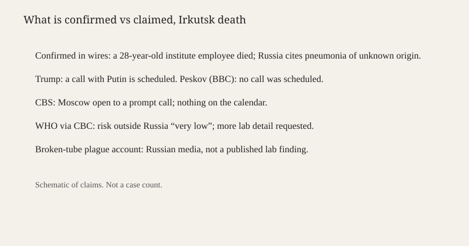

Irkutsk · public health · 8 October 2026
A Siberian institute employee died; plague is unconfirmed and a Trump–Putin call is disputed
_-_0_7.jpg)
What is agreed across desks
A 28-year-old employee of the Irkutsk Anti-Plague Institute of Siberia and the Far East died in early October 2026. Russian media named her Darya Shipilova. The BBC, CBS and CBC place the institute in Irkutsk, more than 2,500 miles east of Moscow, and place the death around 2 October. Russian authorities have described the cause as pneumonia of unknown origin. They have not published a laboratory confirmation that the illness was pneumonic plague. They have said there is no epidemic risk. The World Health Organization, in the CBC account of a Tuesday statement, called the risk outside Russia “very low” and said it had asked Russia for more information on the tests.
The U.S. side of the story is a request for transparency, not a diagnosis. Secretary of State Marco Rubio called on Moscow to share more. A State Department spokesperson told CBS that the embassy in Moscow had engaged Russian authorities and asked for additional information. President Donald Trump told reporters he expected to speak with Vladimir Putin about the case. That expectation is the disputed point. The BBC reported that Kremlin spokesman Dmitry Peskov said no phone call had been scheduled. CBS reported that the Russian government was open to scheduling a call “promptly” and that nothing was on the calendar. Both can be true if “open to” and “scheduled” are kept apart. Trump’s “I have a call scheduled, yes” does not survive as a fact about the Kremlin diary unless Peskov or a U.S. readout later confirms a slot.
What is only a quote
The broken-test-tube account began in Russian outlets, including People of Baikal, and was partly taken down. It said Shipilova may have been exposed after a tube failed, or after a field trip to a region where plague circulates in rodents. Those are leads. They are not a case definition. Trump said he did not believe the episode was a bioweapon and that “we’re going to find out soon enough, but we don’t think so.” That is a presidential probability, not a lab result. He also said the United States was in “deep discussions” and would be able to report “probably tomorrow.” By the morning of 8 October in Los Angeles, the wires used here had not carried that report.
CBC said about 200 people had been placed under medical observation. That figure is a reported administrative step. It is not a count of secondary cases. Observation after a possible high-consequence pathogen is ordinary public-health practice: identify contacts, watch them for the incubation window, and do not wait for a final cause of death before starting the list. A watch list is evidence of caution, not evidence of spread.
Mechanism and history a reader needs
Plague is a bacterial disease caused by Yersinia pestis. The pneumonic form is a lung infection. It is the form that can move person to person by respiratory droplets, which is why a single laboratory or clinical case triggers a wider protocol than a bubonic case linked to a flea bite. The bacterium still exists in wild rodent populations in parts of Asia, Africa and the Americas, including foci in the south-western United States and in central Asia. A research institute that holds it is doing a known job: identifying strains from the field and keeping reference collections. A death of an employee is therefore both a workplace incident and a public-health question. The two are not the same. A workplace incident can be a needle stick, a tube failure, or an infection acquired on a field trip. A public-health emergency begins if there are secondary cases or if the pathogen is loose outside the building. Neither has been established in the sources scored below.
Irkutsk’s anti-plague network is a Soviet-era system that Russia kept. Institutes of this type sit near natural foci so that samples do not have to travel the length of the country before they are typed. That geography explains the location. It does not explain the death. Transparency is the variable governments and the WHO are arguing about: which tests were run, what they showed, how many contacts are in which stage of observation, and whether the building’s containment level matched the work. A phone call between presidents can request those facts. It cannot replace them.
The call dispute is a small example of a larger reporting rule. A president’s sentence about his own calendar is checkable against the other government. When the other government denies a scheduled call, the accurate headline is a disagreement about the diary, not “Trump and Putin discussed plague.” Outlets that print the scheduled call as if Peskov had confirmed it are treating an unverified speaker as the fact. That is why complicity scores differ below even when the underlying death is the same.
What the story is not
It is not a confirmed pneumonic-plague outbreak. It is not a bioweapons finding. It is not proof that 200 people are ill. It is not a photograph of the institute: the still is a museum ship on the Angara at Irkutsk, a location image from September 2025. The schematic underneath separates confirmed administrative facts from claims. It is not an epidemic curve.

Source articles and scores
The question mark in the AFP headline does work that a bare “pneumonic plague” would not. Complicity falls where a headline states a call as if both sides had booked it, or where plague is the noun before Russia has confirmed the organism. CBS keeps “open to” and “questions mount,” which matches the checkable record.